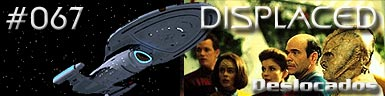
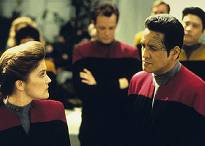
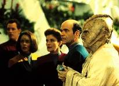
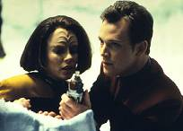
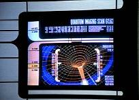
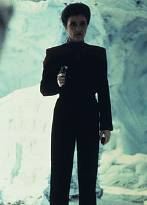
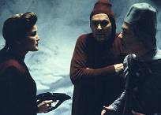

|
Voyager
Temporada 3

Análise do episódio por
Daniel Sasaki


|

|
MANCHETE
DO EPISÓDIO Data Estelar: 50912.4.  Um Nyrian chamado Dammar subitamente aparece na USS Voyager, perguntando por que foi abduzido. A tripulação não é responsável por sua vinda a bordo e descobre que Kes desapareceu da nave no mesmo instante em que o alienígena veio. Pouco tempo depois, Kim some quando outro Nyrian aparece. Em seguida, é a vez de Tuvok. Depois que 22 Nyrians tomam o lugar de tripulantes, Janeway percebe que estão substituindo sua equipe inteira em intervalos de nove minutos.Doze horas mais tarde, a estranha troca levou metade da tripulação. Rislan, um astrofísico Nyrian, trabalha com Torres para encontrar a causa do problema. Mas quando a tenente descobre que os Nyrians são os responsáveis, Rislan a envia para uma colônia de prisioneiros, onde ela encontra os colegas desaparecidos.  Na Voyager, Chakotay chega à tardia conclusão de que os Nyrians estão tentando tomar o controle da nave, pouco antes de ser transportado para a colônia. Taleen, uma porta-voz Nyrian, explica que seu povo rouba naves e estações espaciais gradualmente substituindo as tripulações; é algo menos violento que a guerra. Os prisioneiros são então relocados em lugares que se parecem com o ambiente nativo.Enquanto os oficiais tentam encontrar uma saída daquele local, eles conhecem Jarlath, um outro prisioneiro, que revela que as diferentes áreas da colônia são conectadas por portais disfarçados. Torres re-configura os sensores ópticos do Doutor para que ele possa detectar as passagens. O médico encontra um portal que leva a uma rede de túneis de acesso, cada um conduzindo a uma biosfera diferente. Depois, Janeway descobre um painel de controle que fornece acesso ao sistema de translocação que os trouxe à colônia.  Os Nyrians detectam os tripulantes nas passagens e enviam guardas para capturá-los. Torres e Paris se escondem em um ambiente polar, crendo que a sensibilidade dos inimigos ao frio os incapacitaria. Ao mesmo tempo, Janeway toma o controle do sistema de translocação e transporta Dammar e Rislan para a biosfera congelada. Surpreendidos pela baixa temperatura, os Nyrians entregam a Voyager. De volta à sua nave, a capitã deixa os alienígenas em uma área de sua própria prisão enquanto ajuda os outros prisioneiros a retornar para seus lares.
Depois de uma seqüência de episódios respeitáveis, Voyager volta a trazer um roteiro pobre. "Displaced" é o tipo de história que contribui para a construção da má fama da série perante o resto da franquia: um amontoado de tramas desconexas de aventura, que nada têm a ver com as dificuldades de uma nave perdida do outro lado da galáxia.  A crítica também não tem nada a ver com o fato de a história se sustentar no velho formato "mocinhos versus bandidos". Em parte, é disso que Jornada sobrevive. Mas o inimigo da semana é medíocre e pouco original, e, apesar de suas intenções serem óbvias desde o começo, a tripulação cai direitinho na "armadilha". Mais uma vez fica em xeque a competência da capitã e de seus oficiais. O público, novamente, deve se perguntar como aquela nave ainda está inteira e a tripulação viva.  Sobre os personagens, quem brilha na história é o Doutor, com sua nova carreira como tricorder, e Tom e B'Elanna. O médico holográfico dispensa comentários adicionais, está sensacional como sempre. Quanto à dupla, o relacionamento dos dois vem sendo desenvolvido de forma mais consistente nos últimos episódios. O público deve ficar atento neste aspecto da série daqui para frente. Destaque, mesmo que menor, para a participação de Harry Kim, na cena de conversa com B'Elanna na Engenharia.  Só que nem dá para torcer muito pela vitória da tripulação. O mérito pela resolução não vai para os tripulantes, mas para os Nyrians. Não foi a capitã que conseguiu salvar seus oficiais. Os inimigos é que não tinham sistemas de defesa ou guardas eficientes, além de cometerem uma série de erros que alguém na posição deles nunca faria. Entediante, "Displaced" está entre os piores da série.
Torres - "I am not hostile!" Torres - "You don't think I'm
hostile, do you?" Doutor - "Welcome to Sickbay.
Take a number." Doutor - "Then I can begin my
new career as a tricorder."
Roteiro de Lisa Klink Elenco: Kate Mulgrew como
Kathryn Janeway Elenco convidado: |